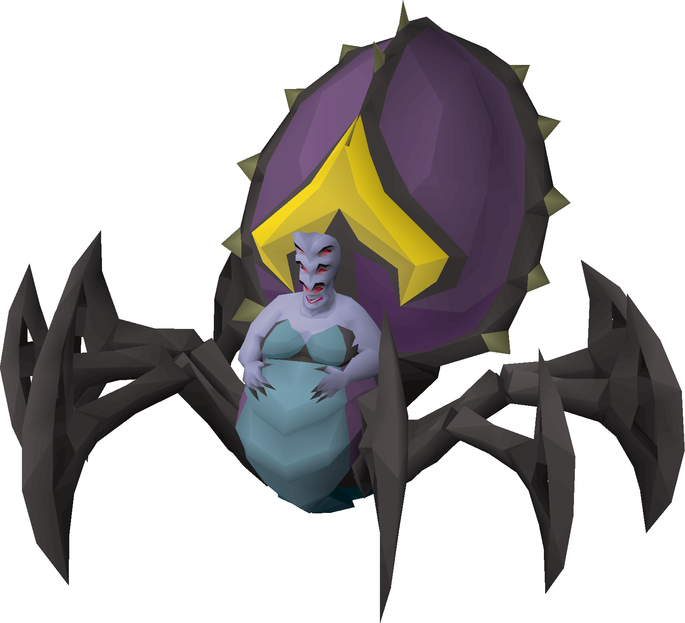
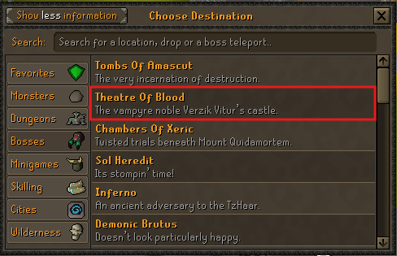
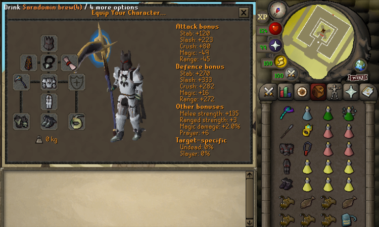
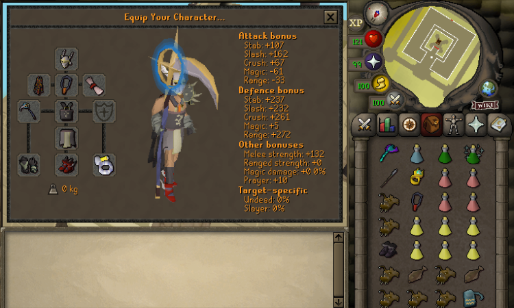
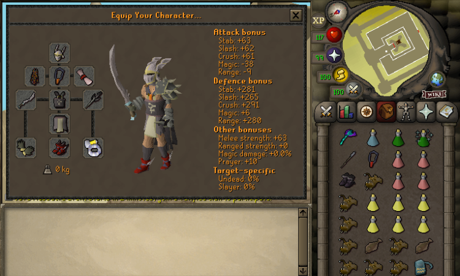
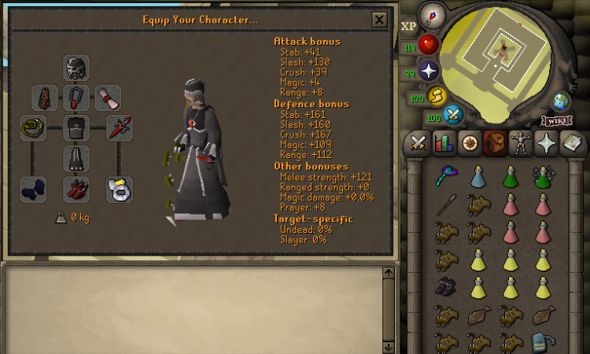
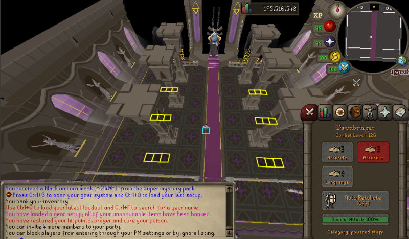

IMPACT VERZIK ENCOUNTER
Impact Theatre of Blood Guide: Verzik, Gear and Phases
Impact's Theatre of Blood takes you through a three-phase Verzik fight. Bring a setup you can sustain, learn the Phase 1 safe tiles and agree on how the team will handle crabs, green balls and tornadoes.

- Access
- Spirit Tree at
::home - Category
- Bosses
- Main encounter
- Verzik Vitur
- Fight structure
- Three phases
- Core skills
- Movement, prayer and mechanics
- Modes
- Normal and Hard Mode
CURRENT TELEPORT ROUTE
How to Get to Theatre of Blood
Impact's current route starts at the Spirit Tree at Home. The supplied in-game interface shows Theatre Of Blood inside the Bosses category, so you do not need to guess which raid menu to use.
- Teleport to
::home. - Use the Spirit Tree.
- Select Bosses.
- Choose Theatre of Blood.
- Enter the raid and continue to Verzik's arena.

BEFORE THE PULL
Prepare for the Mechanics, Not Just Damage
Bring enough sustain to learn without turning every mistake into a restart. The supplied inventories show working examples, but they are not fixed shopping lists: exact quantities depend on your armour, weapon, experience and team.
Fight supplies
- Food and Saradomin brews for recoverable mistakes
- Prayer restoration and combat boosts
- A reliable main melee weapon
- A ranged option such as Blowpipe for the large crab
- Enough free inventory space to use supplies cleanly
Damage tools
- Scythe or the strongest documented alternative you own
- Crystal Halberd or Burning Claw special attacks when used
- The Phase 1 staff for the assigned player
- Gear switches that you can make without missing movement
Team and utility
- Vengeance runes when following that strategy
- Aranea Boots for walking out after webs catch you
- Short team calls for crabs, yellow tiles and green balls
- A clear normal-mode or Hard Mode selection
BEST-IN-SLOT TO BUDGET
Four Impact ToB Gear Setups
Use the strongest tier your account can sustain. Oathplate offers the most complete high-end example, Bandos provides two practical steps below it and Void keeps the entry cost lower. The screenshots are player examples, not the only equipment combinations that work.
| Setup | Account stage | Main weapon | Armour level | Cost | Learning fit | Main trade-off |
|---|---|---|---|---|---|---|
| Oathplate | Established | Scythe-tier | Best-in-slot | Highest | Strong margin | Expensive and unnecessary for first completions |
| Bandos with Scythe | High-level | Scythe | High | High | Strong | Less defensive headroom than Oathplate |
| Bandos without Scythe | Mid/high-level | Crystal Blade first | High | Medium | Practical | Slower kills or greater supply use |
| Void | Budget | Available melee option | Lower | Lowest | Mechanic-heavy | Mistakes are more punishing |
Established accounts
Best-in-slot Oathplate setup

- Weapon priority
- Scythe-tier main weapon, plus the mechanic tools your role uses.
- Inventory focus
- Healing, prayer, boosts, a ranged crab option and documented special tools.
- Main advantage
- Strong damage and defensive margin for established accounts.
- Main limitation
- High cost; it is not required to learn Verzik.
Experienced runs
High-level Bandos setup

- Weapon priority
- Scythe when available, supported by the agreed ranged and special-attack tools.
- Inventory focus
- Keep enough sustain rather than filling every slot with switches.
- Main advantage
- Strong damage from a more accessible armour tier.
- Main limitation
- Errors may cost more supplies or time than the best-in-slot setup.
Mid/high-level accounts
No-Scythe Bandos setup

- Weapon priority
- The Wiki places Crystal Blade behind Scythe, then Zombie Axe or Abyssal Tentacle.
- Inventory focus
- Allow for longer kills with sufficient food, prayer and boosts.
- Main advantage
- A practical route into ToB without waiting for a Scythe.
- Main limitation
- The alternatives are not equal; expect different damage and supply pressure.
Budget entry
Budget Void setup

- Weapon priority
- Use the strongest documented melee option you can sustain.
- Inventory focus
- Bring enough healing, prayer and the ranged option needed for the large crab.
- Main advantage
- Lower entry cost while you learn the encounter.
- Main limitation
- Lower defensive margin makes mechanics more important, not less.
THE THREE-PHASE FIGHT
Verzik Fight Overview
Each phase asks for a different kind of control. Learn the structure first, then use the detailed instructions below to turn it into a repeatable team rhythm.
STAFF AND PILLARS
Use the Safe Tiles Without Hugging a Collapsing Pillar
One player picks up the staff from the floor while the team activates Protect from Magic. The documented strategy starts from the centre, uses pre-Vengeance when available and sends the first staff special attack promptly. Between staff actions, players can switch back to their main weapon and damage Verzik when the route back to safety is clear.
- Pick up the staff.Confirm the assigned player before starting.
- Activate Protect from Magic.Do this before the encounter begins.
- Start from the centre.Use the documented position when following this strategy.
- Use the staff special attack.The first assigned player should act promptly.
- Attack Verzik when safe.Switch to the main weapon between mechanics if movement remains controlled.
- Return to cover.Use the appropriate marked tile and pillar rather than chasing one more hit.
- Leave falling pillars.All remaining pillars collapse when Phase 1 ends.

FLINCHING AND CRABS
Attack After the Jump, Then Step Away
Flinch rhythm
Wait for Verzik's jump, hit immediately after it and move away before the sit attack. If you remain in place, the sit can deal heavy damage and stun you. Learn the visual rhythm instead of relying on an unverified fixed tick count.
Prayer choice
The current Impact guide recommends Protect from Magic because it mitigates the blood attack later in the phase. That does not mean every other projectile or positioning error can be ignored.
Crab responses
Healing crabs
The Wiki documents a spawn after every seven hits. Attack each red crab quickly; its stated sequence is two hits, then return to Verzik.
Large crab
The documented response is one Blowpipe hit to remove it quickly. Do not assume every ranged weapon behaves identically.
Explosive crab
It follows a random player and explodes at close range. When it reaches roughly two tiles, move at least one tile away and do not drag it through teammates.
ORB CONTROL AND MOVEMENT
Read the Attack, Protect the Team and Keep a Clear Path
Crystal Halberd and Burning Claw are both documented special-attack options; neither is presented here as a universal requirement. When Verzik targets a player who remains within melee distance, she uses melee on that target. At range, the current guide documents blue Magic and green Ranged projectiles. Crabs also continue to spawn, so move away before an explosive crab reaches you.
Sticky webs
Verzik fires webs at every player. Tanking or dodging depends on the situation. Aranea Boots let a caught player walk out, but they do not prevent every web effect.
Power orb
Identify the yellow safe tile and stand on it before the orb resolves. Missing the tile causes heavy damage.
Shared ball
Stack beside a teammate to share the hit. The current Impact Wiki documents 110 damage when taken alone and notes Vengeance as an option.
Enrage
Tornadoes begin chasing players at the documented enrage threshold. Keep moving, attack only when safe and avoid crossing a teammate's path.
Phase 3 priority order
- Use the correct prayer for the incoming attack.
- Watch for special attacks before committing to damage.
- Share the green ball with a teammate.
- Stand on the yellow tile before the orb resolves.
- Avoid crabs and webs without blocking teammates.
- Keep moving while tornadoes are active.
SEPARATE FROM NORMAL MODE
Impact ToB Hard Mode Differences
Attempt Hard Mode only after the team completes normal mode consistently. Its added floor hazards punish players who are still learning the base staff, flinch, crab and orb responses.
Falling rocks
Watch for floor shadows and move before the rocks land. The current Wiki documents a hit of 30 when a rock catches a player.
Acid pools
Projectiles leave acid behind, so flinch and move to a fresh tile after each hit. The Wiki says the acid-producing behaviour stops at about 50% health.
Three yellow tiles
Hard Mode uses three yellow safe tiles instead of one. Move between them as the orbs land. High-damage teams may handle parts differently; learning teams can pause damage around 800 HP to separate the orb sequence from tornadoes.
AVOIDABLE FAILURES
Common Theatre of Blood Mistakes
- Entering without understanding the three Verzik phases.
- Using a setup you cannot afford to sustain or replace.
- Standing beside a collapsing pillar in Phase 1.
- Attacking too long before returning to the marked Phase 1 position.
- Failing to step away after a Phase 2 hit.
- Ignoring red healing crabs or bringing no ranged option for the large crab.
- Dragging an explosive crab into teammates.
- Missing the yellow tile or standing alone for the green ball.
- Stopping movement when tornadoes begin chasing players.
- Mixing Hard Mode hazards into the normal-mode plan.
- Treating the supplied screenshots as mandatory loadouts.
READY CHECK
Pre-Raid Checklist
FAQ
Impact Theatre of Blood Questions
How do I get to Theatre of Blood in Impact?
Go to the Spirit Tree at ::home, open the teleport interface, choose Bosses and select Theatre of Blood. Enter the raid and continue to Verzik's arena.
Does Impact Theatre of Blood contain the full raid?
No. The current Impact Wiki says that only Verzik needs to be defeated in Impact's Theatre of Blood, so this guide focuses on her three-phase encounter.
What gear should I use for Impact ToB?
Use the strongest setup you can sustain without sacrificing the supplies and mechanic tools you need. The documented progression runs from Oathplate through Bandos options to budget Void.
Can I complete Impact ToB without a Scythe?
Yes. The Impact Wiki lists Crystal Blade as the preferred option behind Scythe, followed by Zombie Axe or Abyssal Tentacle, but movement and mechanic execution still determine whether the run succeeds.
What are the yellow-marked tiles in Phase 1?
They mark the intended safe positions around the pillars in the supplied arena screenshot. Use them as a positioning reference, but still follow the encounter rhythm and move away from collapsing pillars.
How do I avoid Verzik's Phase 2 sit attack?
Wait for Verzik to jump, attack after the jump and step away before she sits. Staying in place can result in heavy damage and a stun.
What should I do with the red healing crabs?
Attack the red crabs quickly so they cannot continue healing Verzik. The current Impact Wiki documents them as appearing after every seven hits and recommends two hits before returning to the boss.
How do I survive the green ball in Phase 3?
Stand next to a teammate so the impact is shared instead of taking it alone. The current Impact Wiki documents 110 damage to an isolated player and also notes Vengeance as an option.
When does Verzik's enrage phase begin?
The current Impact Wiki places enrage at about 800 HP. Tornadoes then chase players, so keep moving and attack only when it does not compromise your path.
What changes in Impact ToB Hard Mode?
Hard Mode adds falling rocks in Phase 1, acid pools from projectiles in Phase 2 and three yellow safe tiles in Phase 3. Learn normal mode consistently before enabling it.
OPTIONAL EQUIPMENT UPGRADE
Know the Setup Before Pricing Upgrades
Mechanic knowledge matters more than buying every item in a screenshot. Once you know which armour tier, main weapon and supporting tools your account actually needs, check the current Impact price and stock.
Official sources, screenshots and verification
Mechanics and gear tiers were checked against the Impact Wiki Theatre of Blood page. The access route was checked against the supplied Spirit Tree screenshot, and the setup images are player examples rather than mandatory loadouts. Content reviewed July 26, 2026.
The Wiki documents the Impact-specific values identified in this guide, including the seven-hit red-crab cycle, 110 solo green-ball damage, the roughly 800 HP enrage point and the listed Hard Mode thresholds. Mechanics can change, so compare this guide with the current in-game encounter.